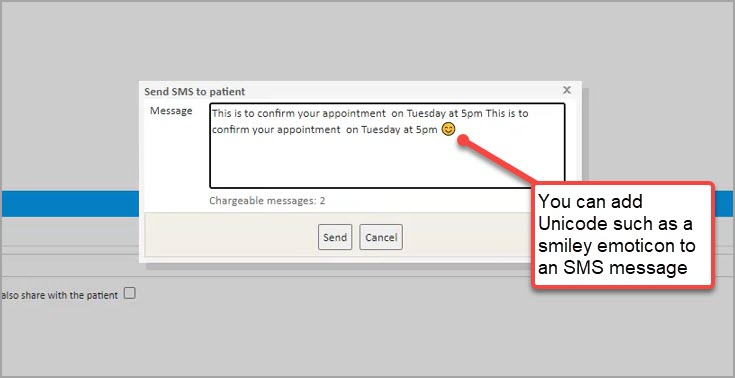
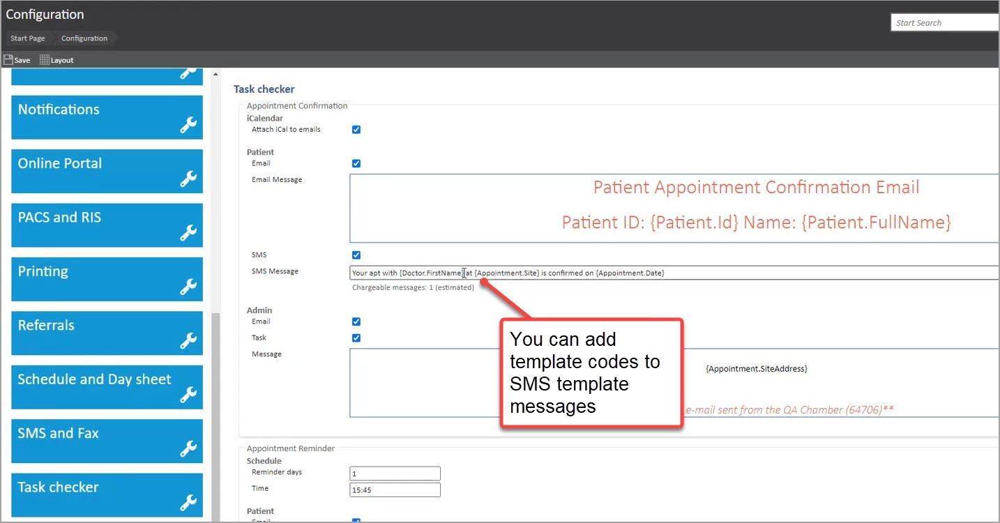
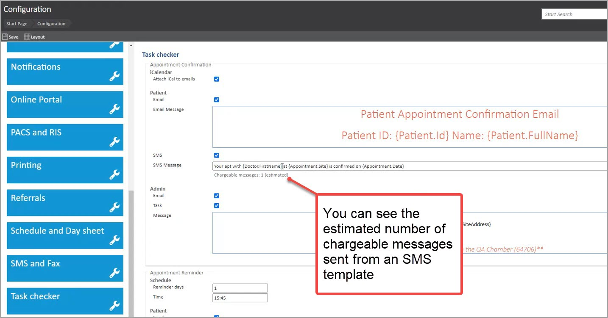
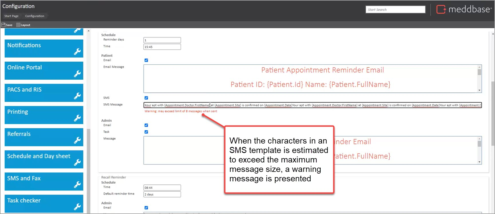
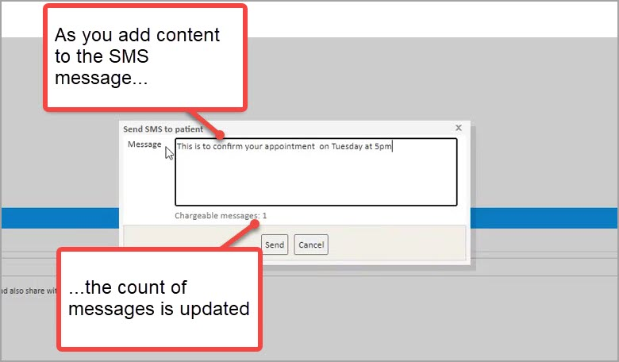
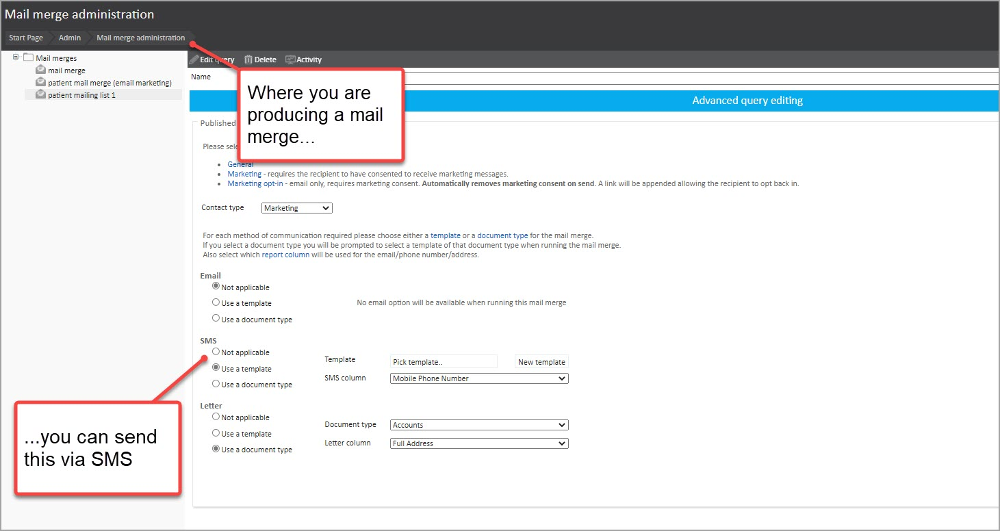

You can use SMS communications in a range of different contexts in Meddbase, both to send ad-hoc SMS messages to contacts, bulk mailings and as messages triggered by different events.
This article summarises the context, capabilities and characteristics you have for SMS communications in Meddbase.
Meddbase supports SMS sending to a limited list of countries. SMS messages can only be delivered to recipients with phone numbers registered in the following countries:
| Australia | Greece | Norway |
| Austria | Hungary | Poland |
| Belgium | Ireland | Portugal |
| Canada | Italy | Romania |
| Croatia | Latvia | Slovakia |
| Czech Republic | Lithuania | Spain |
| Denmark | Luxembourg | Sweden |
| Estonia | Malaysia | United Kingdom (UK) |
| Finland | Malta | United States (US) |
| France | Netherlands | Egypt |
| Germany | New Zealand | Switzerland |
If you attempt to send an SMS to a number outside of these supported countries, the message will not be delivered and will not be charged.
If your organisation needs to send messages to additional countries, please raise a support ticket via the Cority Community.
You can send multi-part SMS messages from Meddbase. Where previously you could send 1 message of up to 160 characters (prior to the release of August 2021), you will be able to send a message of up to 8 message parts.
There will be a message charge for each message part.
You can include Unicode characters in SMS templates and ad-hoc SMS messages. These could include characters such as emoticons, Japanese characters and Greek characters.
Where Unicode characters are included, the whole SMS message (including the message parts) becomes Unicode. This means that:
As an example below, we can see a Unicode character for a smiley emoticon. This will convert the whole message to Unicode.

Using Unicode will have an impact on the message count, shown in the Chargeable messages number in the dialogue. This is because Unicode information consumes more characters than plain text.
Where messages are not using Unicode characters, Meddbase will send SMS messages using GSM. In practice this means:
You can update and set up a range of SMS templates. These can be pre-defined templates that are triggered by specific events such as appointment reminders, questionnaire completion reminders, password resets and a range of further contexts.
You can also create SMS templates to be called up and used on an ad-hoc basis. These are created via Templates.
When updating SMS templates, you can use template codes to enable personalisation.

When updating event-triggered SMS templates, Meddbase shows you the estimated number of message parts that will be included.
The picture below shows an example of the messaging presented when appointment confirmation SMS messages are set up.

These are estimates since the number of characters in text that replaces template codes are variable. The rule of thumb used in calculating the estimated message length is that a template code allows for 30 characters in a delivered message.
When updating event-triggered SMS templates, and Meddbase estimates that the message will exceed the maximum number of permitted characters when sent, it shows you a warning.

In the scenario where an SMS message exceeds the maximum number of characters for a multi-part message:
There is one exception to this principle with SMS type Mail Merges (as explained in the constraints section below).
You can manually send messages to patients from the patient record in Meddbase. When you do so, the system shows you the chargeable number of message parts.

You, or users with the appropriate permissions, can send bulk SMS communications via the Mail merge administration feature.

The process for Mail Merge setup and use is explained in an article about the Mail Merge Feature.
If any message in an SMS mail merge batch is too long, the whole batch is cancelled and not sent.
There are a few constraints and conditions that apply to messages. These are referenced above, but consolidated and summarised below.
| Headline | Explanation |
| 8 message parts per message | You can send up to and including 8 message parts with each message. |
| Character type impacts the number of characters that can be sent | The number of characters that can be included in a message depends on which characters are being sent and whether it is using GSM encoded messages or Unicode messages. |
| Truncation of SMS messages where exceed maximum characters (templates and ad-hoc letters) | Where a template or a message will exceed the maximum number of characters for an 8 part message, the message will be truncated. Therefore characters within the limit will be included in the SMS message. But characters outside of the limit will not be included. |
| SMS mail merge batch not sent where 1 message exceeds the maximum characters | Where an SMS message that forms part of an SMS Mail merge batch exceeds the maximum number of permitted characters for a mail merge, the whole batch is cancelled and not sent. |